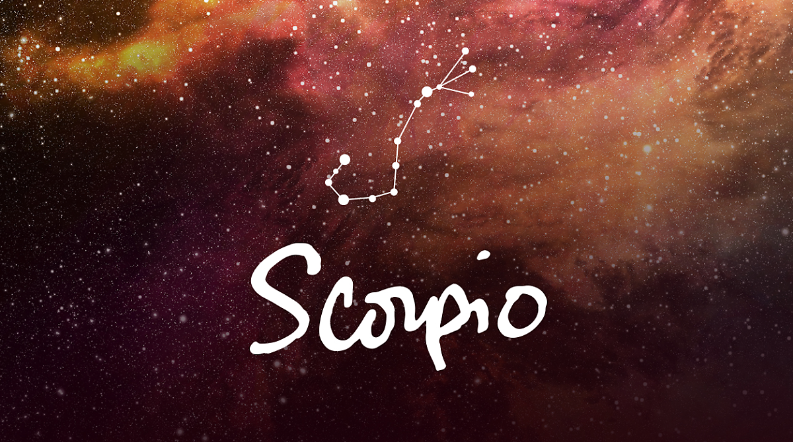

Scorpius (전갈자리)
황도 12궁의 제 8궁
10월 23일 ~ 11월 22일
황도 12궁의 여덟 번째 별자리이며, 여름철의 대표적인 별자리 중 하나로, 하지 무렵에 자정에 남중한다. 수호성은 화성이다.
정중앙에 위치한 진홍색의 1등성 '안타레스'로 유명하며 안타레스와 더불어 2등성 5개, 3등성 9개를 포함할 정도로 밝은 별을 많이 가지고 있다.
바닷가에서 보면 꼭 하늘에서 드리워진 낚시처럼 보이기에 '낚시 별자리'라고 부르는 곳도 있다.
고대에는 천칭자리가 이 별자리의 집게발로 여겨졌지만 기원전 1세기 무렵 천칭자리가 독립해서 현재의 형태로 자리잡았다.
이 별자리의 모델은 오리온을 죽이기 위해 보내진 거대한 전갈이라는 설이 지배적이다.
또한 오리온과 관련된 신화 외에도 헬리오스의 아들 파에톤이 태양을 끄는 마차를 탈 때 마차를 끌던 말의 발을 찔러 난폭해지게 만들었다는 전승도 있다.
폴리네시아 전설에서는 전갈자리가 아니라 낚시바늘자리이다. 기원이 되는 설화는 마우이 설화로, 그 중에서도 가장 잘 알려진 섬을 낚아올린 일화이다.
반인반신의 영웅 마우이는 할머니의 유언에 따라 할머니의 턱뼈를 깎아 바늘을 만들었고, 그 바늘로 거대한 섬을 낚아올린다. 이 섬이 바로 오늘날의 뉴질랜드 북섬이다.
섬이 떠오르며 튕겨나간 바늘은 하늘에 올라 낚시바늘자리가 되었다고 한다.
영화 '모아나'에서 나오는 마우이의 바늘이 바로 설화의 바늘이다.